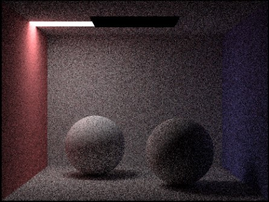

Efficient ray-tracing of moving light sources
Team Members:
Sofia Sun (email: sofia.sun@berkeley.edu, github: sofia-sun), Shawn Huang (email: shawn.huang@berkeley.edu, github: huangshawn1), Aekus Bhathal (email: abhathal@berkeley.edu, github:aekus), Bernard Chan (email: bernardmc8@berkeley.edu, github:bernardmc8)
Abstract:
This project builds upon CS184’s Proj3-1 to try and make ray-tracing faster specifically for moving light sources. It does this by precomputing all of the ray trajectories for the scene and storing this information. Because we use hemisphere sampling, none of these rays depend on the light source location. This means we no longer need to recompute the ray trajectories, which is what makes the ray-tracing faster. As part of this implementation, CS184’s Proj3-1 logic and UI also had to be extended to support the moving of the light sources within a single, concurrent run of the program.
Technical Approach:
Before writing our algorithm, we create a data structure called illum_map, which allows us to store the value of each pixel as a function of the light source. Specifically, we use a C vector in row major order to represent our 2D array with (x, y) coordinates.
In order to implement our algorithm, we modify Proj3-1 so that the ray-tracing functions can account for the position of the light source where they didn’t before. Instead of just outputting a static L_out value, we change PathTracer::estimate_direct_lighting_hemisphere to return a function that returns an L_out value based on the x, y position.
The multipliers vector contains information we precompute from our traced rays like the cosine of the angle and the bsdf->f which don’t depend on the light source.
We then repeat this change for all functions that return a value dependent on the light source, making them return a function instead. This allows us to immediately reference the illum_map on every render, which already stores the necessary information from our precomputed ray trajectories. We don’t need to redundantly trace our rays, and this is where we save time in our implementation in subsequent runs after the first.
Compared to our references listed below, we used them as potential launching pads for ideas on what we could do our project on. However, in terms of what our implementation actually does, it’s not very similar to the papers.
Problems We Encountered:
One of the first problems we encountered was that we were unable to test our initial implementation of the algorithm until we finished the frontend part of the project, which involved changing the Proj3-1 UI to allow us to move the light around. Basically, we couldn’t tell if our algorithm actually sped up the ray-tracing because after implementing our logic, we still didn’t have a way to move the light, which is what our algorithm depends on. Although we tried changing the DAE files to move the light, this required us to re-run the program, so any pre-computed information would be lost over separate runs of the program. We basically tackled this by trying to finish our front end as soon as possible after realizing that we couldn’t even test our logic until it was done. This led to us scrambling a little bit at the end since our first implementation of the algorithm had some bugs (as many first implementations do), which we only discovered after being able to test it. As far as the technical problems we had, it was mainly just bugs dealing with recursion and memory.
Lessons Learned:
The main lessons we learned were about the importance of scheduling when working on a big, long-term project. Specifically, we learned to devise a clear plan before starting any work, to allocate extra time for unforeseen issues, and to keep ourselves accountable to the plan throughout the process. We found that implementing these ideas in our workflow was very helpful in making sure that we never really fell behind for our project, which is often easy to do when it’s as long-term and complex as this one. We also learned the importance of doing sanity checks/tests on our implementation to see if it’s performing as expected, which, in our case, was if it was providing the speed-up that we would expect. We found a couple of bugs in recursive function calls by realizing that our code was not experiencing any speed-up at all. Most importantly, though, we learned that we have the ability to work together and come up with an original solution to a problem we saw.
Results:
We were able to accomplish the goals we set forth in our project proposal. In the videos below, we can see how our implementation is much faster than the original Proj3-1 code.
Original Proj3-1 Code:
Our implementation:
More specifically, as seen in the graph below, our algorithm has a faster runtime when the light is moved around. Of course, if the light never moves, our algorithm is slower because it takes extra time and overhead in order to precompute and store the information. However, once we move the light around, it takes less time than the original Proj3-1 code because it no longer needs to compute the ray trajectories.
This can perhaps be better seen in the graph below, in which we separate out the subsequent renders from the first render to compare it to the original Proj3-1 code. The reason we create a graph like this is that it’s expected for our first render to take longer. After all, the idea of our project is to frontload the work of calculating the ray trajectories and save it during the first render so that the subsequent renders are faster. We can see this in the graph, where our first render is always the slowest, but subsequent renders are much faster than the original Proj3-1 code.
Another metric we can look at is memory usage. Our implementation takes more storage than the original Proj3-1 implementation, which makes complete sense as we have to precompute and store the information to get a speed-up, so this graph is not an indicator of something bad. However, it does show that our algorithm, while effective on a smaller scale, might not be very effective on a large scale with many, many samples per pixel. One of our main potential next steps if we had much more time with this would be to find a more efficient way to store our information. That being said, our algorithm does not take an insane amount of memory for the normal cases that Proj3-1 are rendering anyways, so it’s a good solution for these images, just maybe not if we were sending them to a 4K movie screen.
We’ve also included some sanity checks to show that the images still render correctly with our new implementation and speedup.
References:
Spatiotemporal reservoir resampling for real-time ray tracing with dynamic direct lighting: https://research.nvidia.com/publication/2020-07_Spatiotemporal-reservoir-resampling
Shadow maps for moving light sources:https://mtnphil.wordpress.com/2011/10/31/shadow-maps-for-moving-light-sources/
Contributions:
Sofia Sun: Worked on coding the light moving part of the project. Generated comparison images for the project.
Shawn Huang: Edited Milestone Report and slides, made Milestone video, fixed major bugs in the code, generated results graphs/images
Aekus Bhathal: Designed the algorithm, wrote the majority of the code, fixed bugs in the code.
Bernard Chan: Wrote first draft and majority of the Milestone Report, Wrote first draft and majority of the Final Report. Created Final Report website. Created the Milestone slides.
All team members: Brainstormed ideas, drafted plan, wrote project proposal, revised/edited milestone report, revised/edited final report, made final presentation slides and presented, looked over deliverables/code and made suggestions for change
Acknowledgements:
Big thanks to all the CS184 course staff for helping us with this project!